Whilst in your browser, go to your menu bar, and then Tools > Internet Options:
Click on the Security tab at the top of the window that has just opened: 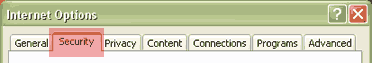 Make sure that the "Internet" zone is selected (by clicking on it once): 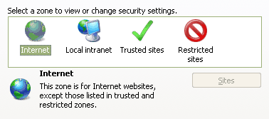 To check the settings below, click on the "Custom level..." button: 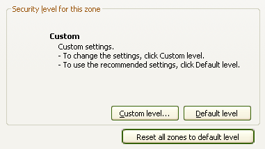 Set your Security Settings to match the options on the images below: 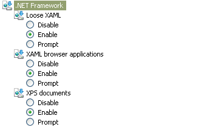 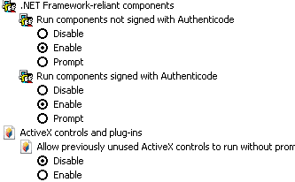 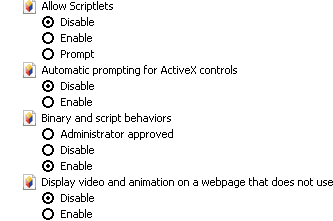 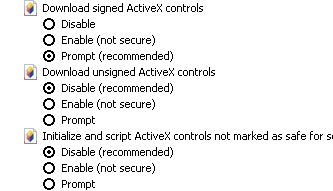 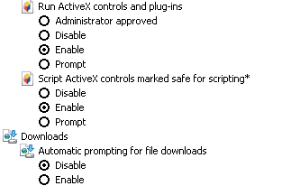 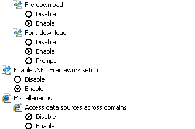 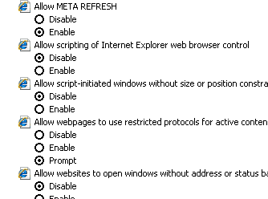 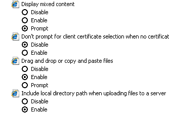 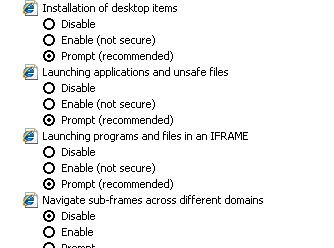 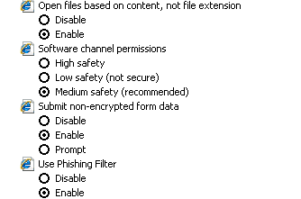 
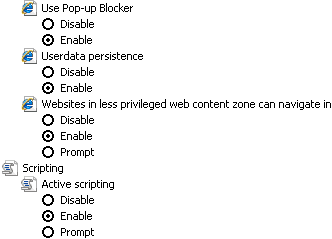 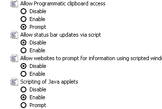 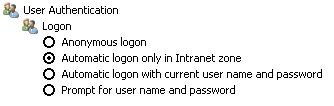 If you are still having problems logging into the system, please phone the HEQC-online system technical team (Praxis Computing) at 011 484 0900 or email chesupport@praxis.co.za |